Each card contains one anchor and all of its stored positive, hard-negative, and easy-negative neighbours.
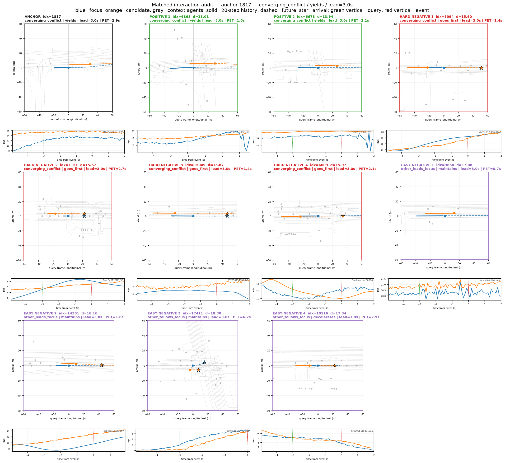
| role | idx | distance | relation | response | lead | PET | Δarrival | source |
|---|---|---|---|---|---|---|---|---|
| anchor | 1817 | — | converging_conflict | yields | 3.0s | 2.9 | 2.9 | 24b58c68bf5cb235_focus_2354_src2.npz |
| positive 1 | 6868 | 13.01 | converging_conflict | yields | 3.0s | 1.6 | 1.6 | 5ff3238ca002ee0_focus_1318_src1.npz |
| positive 2 | 6673 | 13.94 | converging_conflict | yields | 3.0s | 2.1 | 2.1 | 5d8a51c8fb0d739c_focus_167_src0.npz |
| hard_negative 1 | 5094 | 15.60 | converging_conflict | goes_first | 3.0s | 1.4 | -1.4 | 4b61c03f986f4044_focus_4442_src5.npz |
| hard_negative 2 | 1151 | 15.67 | converging_conflict | goes_first | 3.0s | 2.7 | -2.7 | 1cac0a6110f21f50_focus_2321_src3.npz |
| hard_negative 3 | 15049 | 15.87 | converging_conflict | goes_first | 3.0s | 1.4 | -1.4 | c557056154801cb3_focus_1697_src2.npz |
| hard_negative 4 | 6609 | 15.97 | converging_conflict | goes_first | 3.0s | 2.1 | -2.1 | 5cedccacdac00686_focus_978_src1.npz |
| easy_negative 1 | 3668 | 17.08 | other_leads_focus | maintains | 3.0s | 0.7 | 0.7 | 3aceaf6e871dbccd_focus_747_src0.npz |
| easy_negative 2 | 14381 | 16.16 | other_leads_focus | maintains | 3.0s | 1.8 | 1.8 | bdb3cba00bad6ff7_focus_685_src2.npz |
| easy_negative 3 | 17411 | 18.30 | other_follows_focus | maintains | 3.0s | 6.2 | 0.0 | e007d317b074294d_focus_682_src5.npz |
| easy_negative 4 | 10116 | 17.34 | other_follows_focus | decelerates | 3.0s | 2.9 | -2.9 | 8c6008b115d910ea_focus_304_src1.npz |
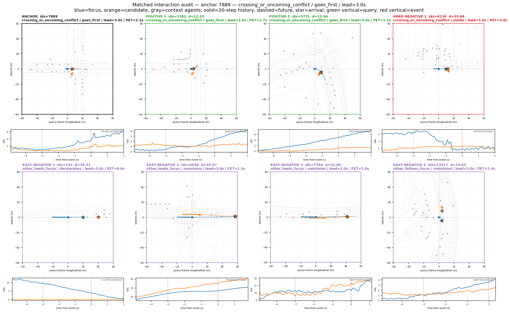
| role | idx | distance | relation | response | lead | PET | Δarrival | source |
|---|---|---|---|---|---|---|---|---|
| anchor | 7889 | — | crossing_or_oncoming_conflict | goes_first | 3.0s | 2.1 | -2.1 | 6bcd51a4c0f692d8_focus_2799_src0.npz |
| positive 1 | 2362 | 12.23 | crossing_or_oncoming_conflict | goes_first | 3.0s | 2.7 | -2.7 | 2be8cd4124e3e20e_focus_2058_src0.npz |
| positive 2 | 5731 | 13.94 | crossing_or_oncoming_conflict | goes_first | 3.0s | 2.1 | -2.1 | 5385c863e42ab4ac_focus_1551_src1.npz |
| hard_negative 1 | 6136 | 33.68 | crossing_or_oncoming_conflict | yields | 3.0s | 3.0 | 3.0 | 58205251e459e0c_focus_0_src0.npz |
| easy_negative 1 | 192 | 35.31 | other_leads_focus | decelerates | 3.0s | 8.0 | 0.0 | 11ee7951a330eba5_focus_437_src7.npz |
| easy_negative 2 | 5630 | 35.57 | other_leads_focus | maintains | 3.0s | 1.3 | 1.3 | 528a656a6751e4cc_focus_284_src6.npz |
| easy_negative 3 | 7784 | 32.00 | other_leads_focus | maintains | 3.0s | 1.0 | 1.0 | 6a9076b06cfd3606_focus_37_src6.npz |
| easy_negative 4 | 13517 | 74.65 | other_follows_focus | maintains | 3.0s | 2.4 | 0.0 | b4f3749eae902d8c_focus_1968_src0.npz |
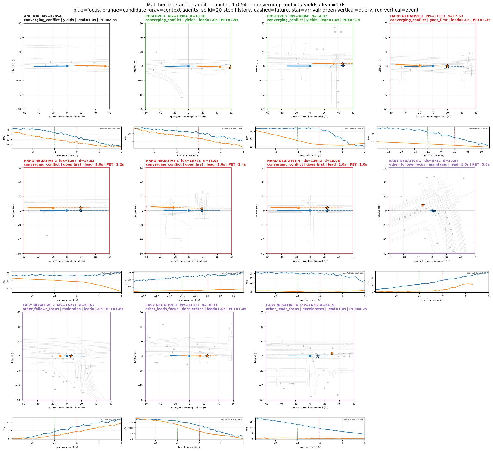
| role | idx | distance | relation | response | lead | PET | Δarrival | source |
|---|---|---|---|---|---|---|---|---|
| anchor | 17054 | — | converging_conflict | yields | 1.0s | 2.8 | 2.8 | db8b648543d97f55_focus_9_src2.npz |
| positive 1 | 13984 | 13.10 | converging_conflict | yields | 1.0s | 2.9 | 2.9 | ba2c9a2dda018faf_focus_1675_src2.npz |
| positive 2 | 10060 | 14.07 | converging_conflict | yields | 1.0s | 2.1 | 2.1 | 8bf94bf56e0daf9e_focus_335_src1.npz |
| hard_negative 1 | 11313 | 17.63 | converging_conflict | goes_first | 1.0s | 1.3 | -1.3 | 99fc5fc4f4c0c678_focus_1467_src0.npz |
| hard_negative 2 | 8267 | 17.83 | converging_conflict | goes_first | 1.0s | 1.2 | -1.2 | 706f24b99e58f375_focus_677_src0.npz |
| hard_negative 3 | 16723 | 18.05 | converging_conflict | goes_first | 1.0s | 1.4 | -1.4 | d7b4de9da6a3fd87_focus_836_src0.npz |
| hard_negative 4 | 13642 | 18.08 | converging_conflict | goes_first | 1.0s | 1.0 | -1.0 | b5e96565ceec8b6e_focus_1774_src1.npz |
| easy_negative 1 | 5732 | 30.97 | other_follows_focus | maintains | 1.0s | 5.3 | 0.0 | 5385c863e42ab4ac_focus_1551_src1.npz |
| easy_negative 2 | 16271 | 26.67 | other_follows_focus | maintains | 1.0s | 1.8 | -1.8 | d3287a9ffc2cc106_focus_13_src0.npz |
| easy_negative 3 | 11917 | 18.93 | other_leads_focus | decelerates | 1.0s | 1.4 | 1.4 | a1eaa243a98515b5_focus_209_src1.npz |
| easy_negative 4 | 1636 | 24.76 | other_leads_focus | decelerates | 1.0s | 4.2 | 0.0 | 221d48ae1649ea6b_focus_778_src3.npz |
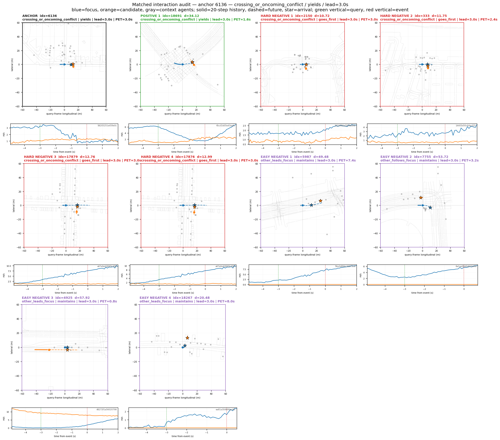
| role | idx | distance | relation | response | lead | PET | Δarrival | source |
|---|---|---|---|---|---|---|---|---|
| anchor | 6136 | — | crossing_or_oncoming_conflict | yields | 3.0s | 3.0 | 3.0 | 58205251e459e0c_focus_0_src0.npz |
| positive 1 | 18691 | 34.12 | crossing_or_oncoming_conflict | yields | 3.0s | 1.6 | 1.6 | f0ccf2d05e43aafc_focus_1697_src1.npz |
| hard_negative 1 | 2150 | 10.72 | crossing_or_oncoming_conflict | goes_first | 3.0s | 3.0 | -3.0 | 2910666a2084ed0a_focus_2237_src1.npz |
| hard_negative 2 | 333 | 11.75 | crossing_or_oncoming_conflict | goes_first | 3.0s | 2.4 | -2.4 | 14405d50c64acf15_focus_2080_src1.npz |
| hard_negative 3 | 17879 | 12.76 | crossing_or_oncoming_conflict | goes_first | 3.0s | 3.0 | -3.0 | e67efa4280f3c399_focus_2811_src1.npz |
| hard_negative 4 | 17876 | 12.99 | crossing_or_oncoming_conflict | goes_first | 3.0s | 3.0 | -3.0 | e67efa4280f3c399_focus_2811_src1.npz |
| easy_negative 1 | 5987 | 49.48 | other_leads_focus | maintains | 3.0s | 7.4 | 0.0 | 56a3d894c36573c6_focus_375_src2.npz |
| easy_negative 2 | 7755 | 53.72 | other_follows_focus | maintains | 3.0s | 3.2 | 0.0 | 6a1ae96d0d620a4d_focus_2729_src4.npz |
| easy_negative 3 | 4925 | 57.92 | other_leads_focus | maintains | 3.0s | 0.8 | 0.8 | 48272f1a56020798_focus_856_src0.npz |
| easy_negative 4 | 18267 | 20.48 | other_leads_focus | maintains | 3.0s | 8.0 | 0.0 | ea81a304899ec4fc_focus_1524_src0.npz |
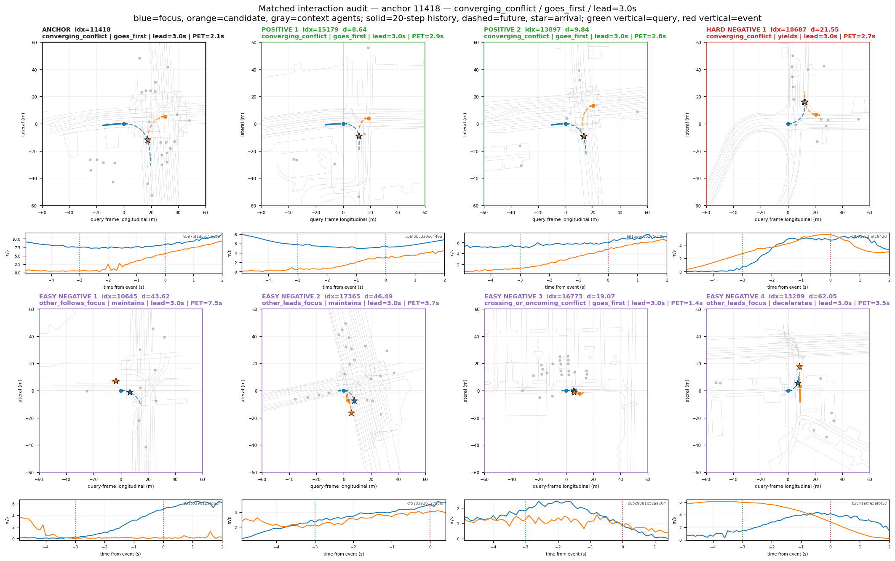
| role | idx | distance | relation | response | lead | PET | Δarrival | source |
|---|---|---|---|---|---|---|---|---|
| anchor | 11418 | — | converging_conflict | goes_first | 3.0s | 2.1 | -2.1 | 9b87bf1dca15bc5e_focus_104_src7.npz |
| positive 1 | 15179 | 8.64 | converging_conflict | goes_first | 3.0s | 2.9 | -2.9 | c6bf5bcd39ec449a_focus_1824_src4.npz |
| positive 2 | 13897 | 9.84 | converging_conflict | goes_first | 3.0s | 2.8 | -2.8 | b91bdec65275dc96_focus_1601_src2.npz |
| hard_negative 1 | 18687 | 21.55 | converging_conflict | yields | 3.0s | 2.7 | 2.7 | f0b532c2fef1942d_focus_420_src2.npz |
| easy_negative 1 | 10645 | 43.62 | other_follows_focus | maintains | 3.0s | 7.5 | 0.0 | 931c319012afdb1f_focus_164_src2.npz |
| easy_negative 2 | 17365 | 46.49 | other_leads_focus | maintains | 3.0s | 3.7 | 0.0 | df51839261279cfd_focus_7_src0.npz |
| easy_negative 3 | 16773 | 19.07 | crossing_or_oncoming_conflict | goes_first | 3.0s | 1.4 | -1.4 | d85c9081b5caa204_focus_200_src0.npz |
| easy_negative 4 | 13289 | 62.05 | other_leads_focus | decelerates | 3.0s | 3.5 | 0.0 | b2c41a6fe5af6f37_focus_1466_src0.npz |
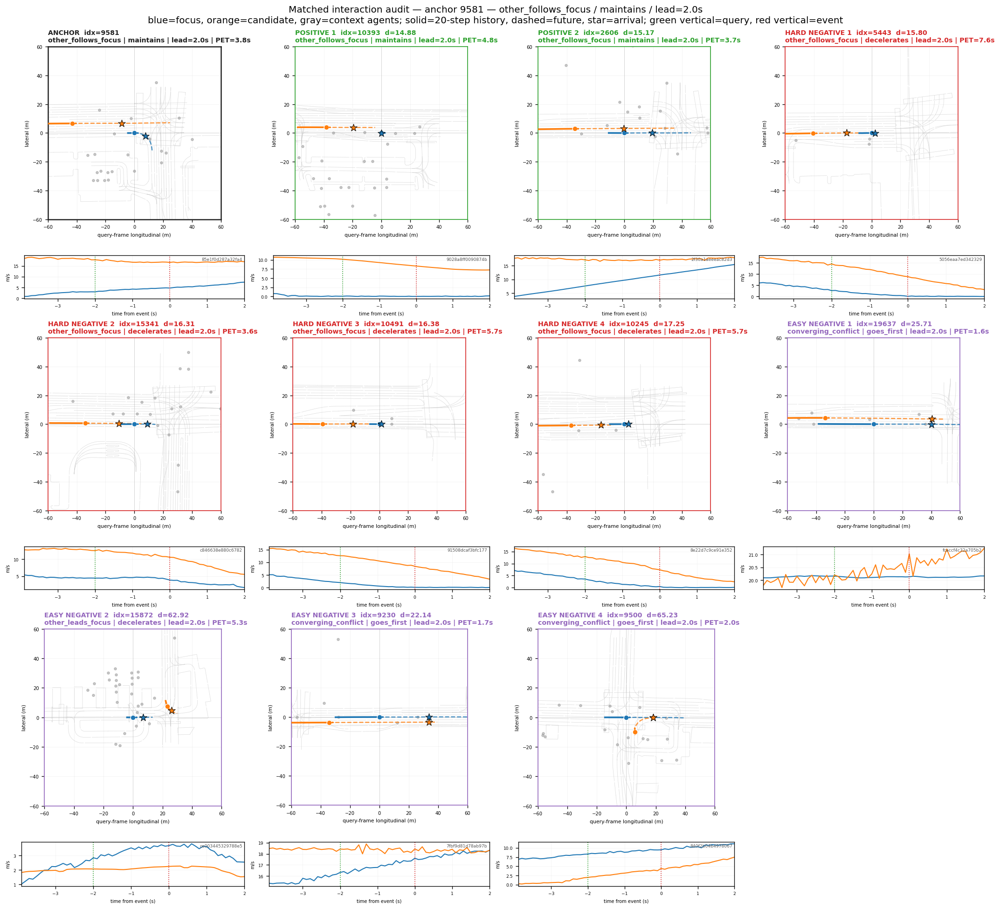
| role | idx | distance | relation | response | lead | PET | Δarrival | source |
|---|---|---|---|---|---|---|---|---|
| anchor | 9581 | — | other_follows_focus | maintains | 2.0s | 3.8 | 0.0 | 85e1f0d287a32fa4_focus_4_src0.npz |
| positive 1 | 10393 | 14.88 | other_follows_focus | maintains | 2.0s | 4.8 | 0.0 | 9028a8ff0090874b_focus_688_src3.npz |
| positive 2 | 2606 | 15.17 | other_follows_focus | maintains | 2.0s | 3.7 | 0.0 | 2f30a1aeeeac82d3_focus_1978_src7.npz |
| hard_negative 1 | 5443 | 15.80 | other_follows_focus | decelerates | 2.0s | 7.6 | 0.0 | 5056eaa7ed342329_focus_1140_src2.npz |
| hard_negative 2 | 15341 | 16.31 | other_follows_focus | decelerates | 2.0s | 3.6 | 0.0 | c846638e880c6782_focus_384_src2.npz |
| hard_negative 3 | 10491 | 16.38 | other_follows_focus | decelerates | 2.0s | 5.7 | 0.0 | 91508dcaf3bfc177_focus_276_src1.npz |
| hard_negative 4 | 10245 | 17.25 | other_follows_focus | decelerates | 2.0s | 5.7 | 0.0 | 8e22d7c9ce91e352_focus_471_src1.npz |
| easy_negative 1 | 19637 | 25.71 | converging_conflict | goes_first | 2.0s | 1.6 | -1.6 | fcaccf4c32a705b2_focus_97_src3.npz |
| easy_negative 2 | 15872 | 62.92 | other_leads_focus | decelerates | 2.0s | 5.3 | 0.0 | ce003445329788e5_focus_4544_src1.npz |
| easy_negative 3 | 9230 | 22.14 | converging_conflict | goes_first | 2.0s | 1.7 | -1.7 | 7fbf9d81d78ab97b_focus_339_src1.npz |
| easy_negative 4 | 9500 | 65.23 | converging_conflict | goes_first | 2.0s | 2.0 | -2.0 | 840f2b04b4978067_focus_39_src0.npz |
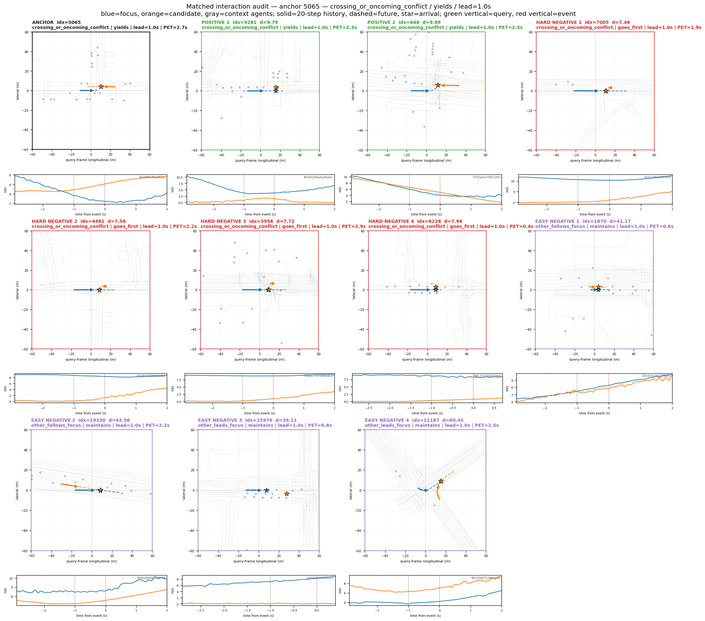
| role | idx | distance | relation | response | lead | PET | Δarrival | source |
|---|---|---|---|---|---|---|---|---|
| anchor | 5065 | — | crossing_or_oncoming_conflict | yields | 1.0s | 2.7 | 2.7 | 4b09f6fcfbaa8eac_focus_1404_src0.npz |
| positive 1 | 9281 | 9.79 | crossing_or_oncoming_conflict | yields | 1.0s | 2.3 | 2.3 | 8030d268ebe46dec_focus_1501_src2.npz |
| positive 2 | 648 | 9.99 | crossing_or_oncoming_conflict | yields | 1.0s | 2.5 | 2.5 | 1793ad1d7802365_focus_203_src1.npz |
| hard_negative 1 | 7005 | 7.46 | crossing_or_oncoming_conflict | goes_first | 1.0s | 1.9 | -1.9 | 610a19f3af07c6cf_focus_2570_src2.npz |
| hard_negative 2 | 4481 | 7.56 | crossing_or_oncoming_conflict | goes_first | 1.0s | 2.2 | -2.2 | 43a6bf799990dd84_focus_388_src1.npz |
| hard_negative 3 | 5956 | 7.72 | crossing_or_oncoming_conflict | goes_first | 1.0s | 2.9 | -2.9 | 55ea177878d8e4cd_focus_1154_src2.npz |
| hard_negative 4 | 6228 | 7.94 | crossing_or_oncoming_conflict | goes_first | 1.0s | 0.4 | -0.4 | 58fc29259202bfb9_focus_25_src4.npz |
| easy_negative 1 | 1870 | 41.17 | other_follows_focus | maintains | 1.0s | 0.6 | -0.6 | 258307e764128e91_focus_742_src1.npz |
| easy_negative 2 | 19330 | 43.56 | other_follows_focus | maintains | 1.0s | 2.2 | -2.2 | f8a92965bc298c58_focus_9_src2.npz |
| easy_negative 3 | 15976 | 39.11 | other_leads_focus | maintains | 1.0s | 6.8 | 0.0 | cefc929310b66cf1_focus_17_src3.npz |
| easy_negative 4 | 11187 | 60.45 | other_leads_focus | maintains | 1.0s | 2.5 | 2.5 | 98c039675380e458_focus_399_src2.npz |
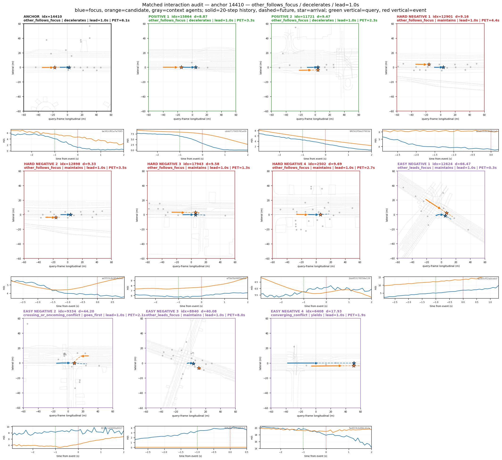
| role | idx | distance | relation | response | lead | PET | Δarrival | source |
|---|---|---|---|---|---|---|---|---|
| anchor | 14410 | — | other_follows_focus | decelerates | 1.0s | 6.1 | 0.0 | be362cf81a7e7065_focus_864_src1.npz |
| positive 1 | 15864 | 8.87 | other_follows_focus | decelerates | 1.0s | 3.3 | 0.0 | cddd717905781e09_focus_530_src0.npz |
| positive 2 | 11721 | 9.47 | other_follows_focus | decelerates | 1.0s | 2.3 | -2.3 | 9f6562f5bb37903d_focus_657_src0.npz |
| hard_negative 1 | 12901 | 9.16 | other_follows_focus | maintains | 1.0s | 4.4 | 0.0 | ad3533c8c80db2e0_focus_1463_src0.npz |
| hard_negative 2 | 12898 | 9.33 | other_follows_focus | maintains | 1.0s | 3.5 | 0.0 | ad3533c8c80db2e0_focus_1463_src0.npz |
| hard_negative 3 | 17943 | 9.58 | other_follows_focus | maintains | 1.0s | 1.3 | -1.3 | e75bf3b06f59ef2b_focus_3458_src1.npz |
| hard_negative 4 | 2502 | 9.69 | other_follows_focus | maintains | 1.0s | 2.7 | -2.7 | 2da953178558e126_focus_759_src1.npz |
| easy_negative 1 | 12624 | 66.47 | other_leads_focus | maintains | 1.0s | 0.3 | 0.0 | aa3e5cf52adcedcf_focus_1362_src3.npz |
| easy_negative 2 | 9334 | 44.20 | crossing_or_oncoming_conflict | goes_first | 1.0s | 2.1 | -2.1 | 815cc1d3000e6027_focus_653_src5.npz |
| easy_negative 3 | 8840 | 40.08 | other_leads_focus | maintains | 1.0s | 8.0 | 0.0 | 7a9cbb7a02d852c5_focus_3452_src0.npz |
| easy_negative 4 | 6408 | 17.93 | converging_conflict | yields | 1.0s | 1.9 | 1.9 | 5ad019cbd66c412a_focus_2676_src1.npz |
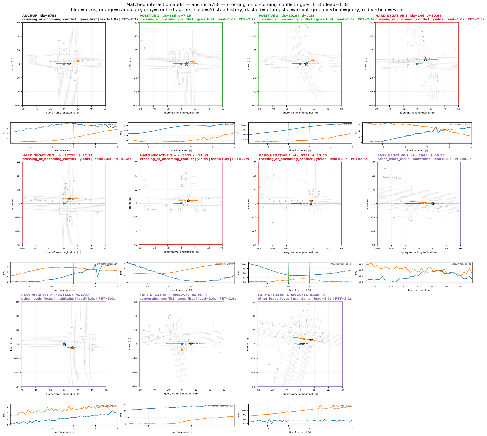
| role | idx | distance | relation | response | lead | PET | Δarrival | source |
|---|---|---|---|---|---|---|---|---|
| anchor | 6758 | — | crossing_or_oncoming_conflict | goes_first | 1.0s | 2.7 | -2.7 | 5ee6238cb2ef83d_focus_513_src3.npz |
| positive 1 | 585 | 7.19 | crossing_or_oncoming_conflict | goes_first | 1.0s | 2.2 | -2.2 | 17156309793ec488_focus_58_src2.npz |
| positive 2 | 10194 | 7.85 | crossing_or_oncoming_conflict | goes_first | 1.0s | 2.4 | -2.4 | 8d3153d537040f09_focus_839_src2.npz |
| hard_negative 1 | 146 | 10.64 | crossing_or_oncoming_conflict | yields | 1.0s | 2.5 | 2.5 | 1151e26ae52d9406_focus_761_src1.npz |
| hard_negative 2 | 17750 | 12.12 | crossing_or_oncoming_conflict | yields | 1.0s | 1.8 | 1.8 | e494ef45bafcbea6_focus_1253_src0.npz |
| hard_negative 3 | 5065 | 12.43 | crossing_or_oncoming_conflict | yields | 1.0s | 2.7 | 2.7 | 4b09f6fcfbaa8eac_focus_1404_src0.npz |
| hard_negative 4 | 9281 | 13.68 | crossing_or_oncoming_conflict | yields | 1.0s | 2.3 | 2.3 | 8030d268ebe46dec_focus_1501_src2.npz |
| easy_negative 1 | 2645 | 40.90 | other_leads_focus | maintains | 1.0s | 0.9 | 0.9 | 2fc12f091e38b421_focus_158_src1.npz |
| easy_negative 2 | 14667 | 42.59 | other_leads_focus | maintains | 1.0s | 5.0 | 0.0 | c073d4a1bbd64db1_focus_66_src1.npz |
| easy_negative 3 | 2537 | 39.68 | converging_conflict | goes_first | 1.0s | 2.9 | -2.9 | 2e2041c250269e2e_focus_1_src0.npz |
| easy_negative 4 | 5714 | 48.95 | other_leads_focus | maintains | 1.0s | 3.1 | 0.0 | 536000347ac4a30d_focus_136_src7.npz |
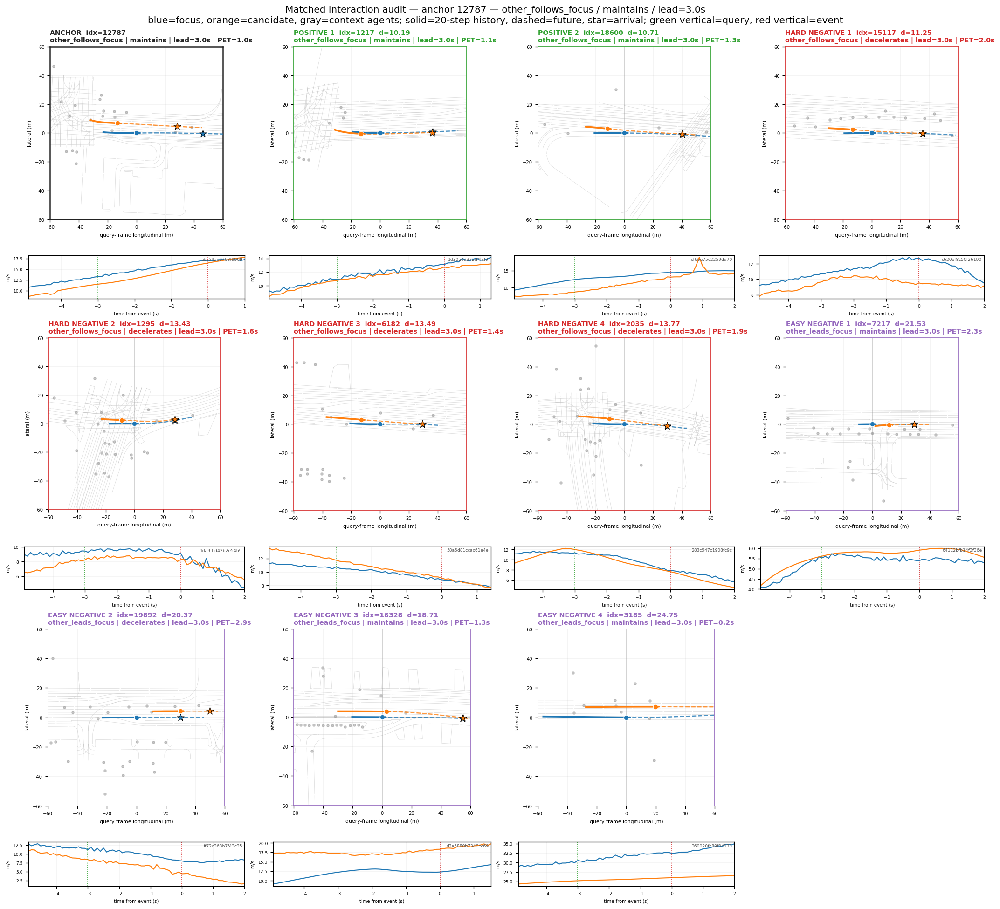
| role | idx | distance | relation | response | lead | PET | Δarrival | source |
|---|---|---|---|---|---|---|---|---|
| anchor | 12787 | — | other_follows_focus | maintains | 3.0s | 1.0 | 0.0 | abc54ae9763f9909_focus_2563_src4.npz |
| positive 1 | 1217 | 10.19 | other_follows_focus | maintains | 3.0s | 1.1 | -1.1 | 1d30a4d372d4fcf9_focus_3602_src1.npz |
| positive 2 | 18600 | 10.71 | other_follows_focus | maintains | 3.0s | 1.3 | -1.3 | ef66e75c2259dd70_focus_220_src4.npz |
| hard_negative 1 | 15117 | 11.25 | other_follows_focus | decelerates | 3.0s | 2.0 | -2.0 | c620ef8c50f26190_focus_1257_src2.npz |
| hard_negative 2 | 1295 | 13.43 | other_follows_focus | decelerates | 3.0s | 1.6 | -1.6 | 1da9f0d42b2e54b9_focus_762_src1.npz |
| hard_negative 3 | 6182 | 13.49 | other_follows_focus | decelerates | 3.0s | 1.4 | -1.4 | 58a5d81ccac61e4e_focus_2907_src2.npz |
| hard_negative 4 | 2035 | 13.77 | other_follows_focus | decelerates | 3.0s | 1.9 | -1.9 | 283c547c1908fc9c_focus_1136_src1.npz |
| easy_negative 1 | 7217 | 21.53 | other_leads_focus | maintains | 3.0s | 2.3 | 2.3 | 64112bfb14f3f36e_focus_9_src0.npz |
| easy_negative 2 | 19892 | 20.37 | other_leads_focus | decelerates | 3.0s | 2.9 | 0.0 | ff72c363b7f43c35_focus_632_src0.npz |
| easy_negative 3 | 16328 | 18.71 | other_leads_focus | maintains | 3.0s | 1.3 | 1.3 | d3a5880b7340cc69_focus_1048_src6.npz |
| easy_negative 4 | 3185 | 24.75 | other_leads_focus | maintains | 3.0s | 0.2 | 0.0 | 360020fc89f04133_focus_612_src7.npz |
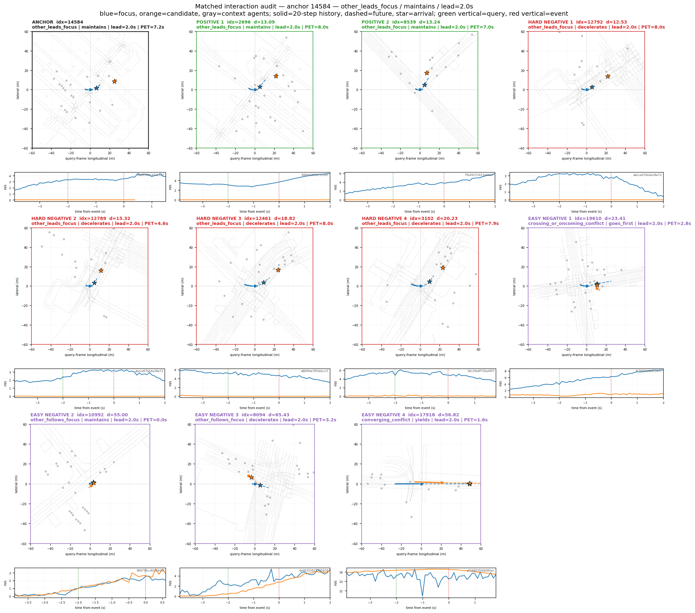
| role | idx | distance | relation | response | lead | PET | Δarrival | source |
|---|---|---|---|---|---|---|---|---|
| anchor | 14584 | — | other_leads_focus | maintains | 2.0s | 7.2 | 0.0 | bfaf6546cd74c147_focus_1483_src1.npz |
| positive 1 | 2696 | 13.09 | other_leads_focus | maintains | 2.0s | 8.0 | 0.0 | 3080b5ff36c12065_focus_598_src7.npz |
| positive 2 | 8539 | 13.24 | other_leads_focus | maintains | 2.0s | 7.0 | 0.0 | 75b49c51823abb07_focus_1050_src0.npz |
| hard_negative 1 | 12792 | 12.53 | other_leads_focus | decelerates | 2.0s | 8.0 | 0.0 | abcce67bb4a38e73_focus_798_src0.npz |
| hard_negative 2 | 12789 | 15.32 | other_leads_focus | decelerates | 2.0s | 4.6 | 0.0 | abcce67bb4a38e73_focus_798_src0.npz |
| hard_negative 3 | 12461 | 18.82 | other_leads_focus | decelerates | 2.0s | 8.0 | 0.0 | a8bf9de785ddccc5_focus_3132_src0.npz |
| hard_negative 4 | 3102 | 20.23 | other_leads_focus | decelerates | 2.0s | 7.9 | 0.0 | 34c29e8f730a4f07_focus_1355_src1.npz |
| easy_negative 1 | 19610 | 23.41 | crossing_or_oncoming_conflict | goes_first | 2.0s | 2.8 | -2.8 | fc7909af4bfc347c_focus_989_src0.npz |
| easy_negative 2 | 10992 | 55.00 | other_follows_focus | maintains | 2.0s | 0.0 | 0.0 | 968758cc80164d3f_focus_226_src0.npz |
| easy_negative 3 | 8094 | 65.43 | other_follows_focus | decelerates | 2.0s | 3.2 | 0.0 | 6e90355873705828_focus_1958_src6.npz |
| easy_negative 4 | 17918 | 56.82 | converging_conflict | yields | 2.0s | 1.6 | 1.6 | e7198935fd6680ac_focus_3635_src0.npz |
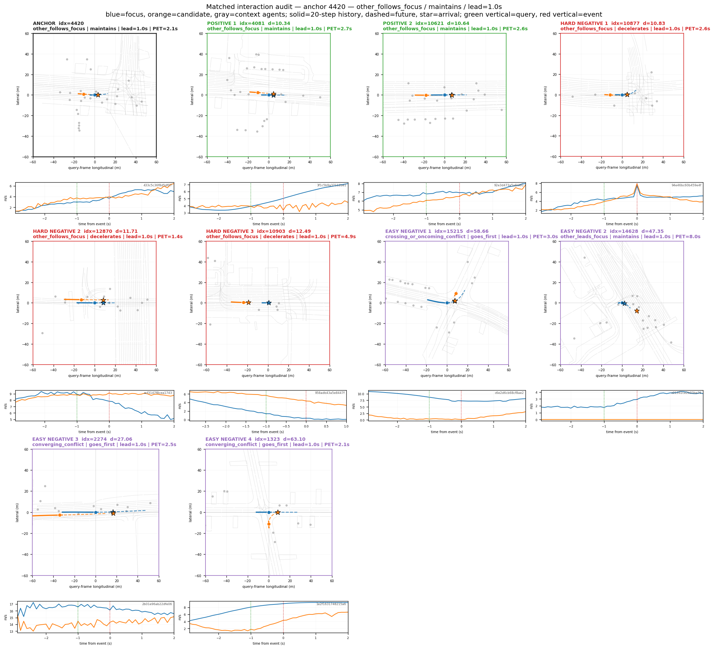
| role | idx | distance | relation | response | lead | PET | Δarrival | source |
|---|---|---|---|---|---|---|---|---|
| anchor | 4420 | — | other_follows_focus | maintains | 1.0s | 2.1 | -2.1 | 433c5c36f8d5df07_focus_1391_src1.npz |
| positive 1 | 4081 | 10.34 | other_follows_focus | maintains | 1.0s | 2.7 | -2.7 | 3f1c5b9a37112be1_focus_3386_src4.npz |
| positive 2 | 10621 | 10.64 | other_follows_focus | maintains | 1.0s | 2.6 | -2.6 | 92e3d473a5a84f91_focus_1913_src0.npz |
| hard_negative 1 | 10877 | 10.83 | other_follows_focus | decelerates | 1.0s | 2.6 | -2.6 | 94e46bc60b459e4f_focus_1587_src5.npz |
| hard_negative 2 | 12870 | 11.71 | other_follows_focus | decelerates | 1.0s | 1.4 | -1.4 | acf3147f8cea1743_focus_566_src0.npz |
| hard_negative 3 | 10903 | 12.49 | other_follows_focus | decelerates | 1.0s | 4.9 | 0.0 | 958adb43a5e8447f_focus_1738_src1.npz |
| easy_negative 1 | 15215 | 58.66 | crossing_or_oncoming_conflict | goes_first | 1.0s | 3.0 | -3.0 | c6e2d6cb68cf8ae2_focus_1891_src1.npz |
| easy_negative 2 | 14628 | 47.35 | other_leads_focus | maintains | 1.0s | 8.0 | 0.0 | c01392ce2b03be76_focus_2403_src3.npz |
| easy_negative 3 | 2274 | 27.06 | converging_conflict | goes_first | 1.0s | 2.5 | -2.5 | 2b01e96ab22dfe06_focus_2263_src2.npz |
| easy_negative 4 | 1323 | 63.10 | converging_conflict | goes_first | 1.0s | 2.1 | -2.1 | 1e2f1631748215a6_focus_1763_src1.npz |
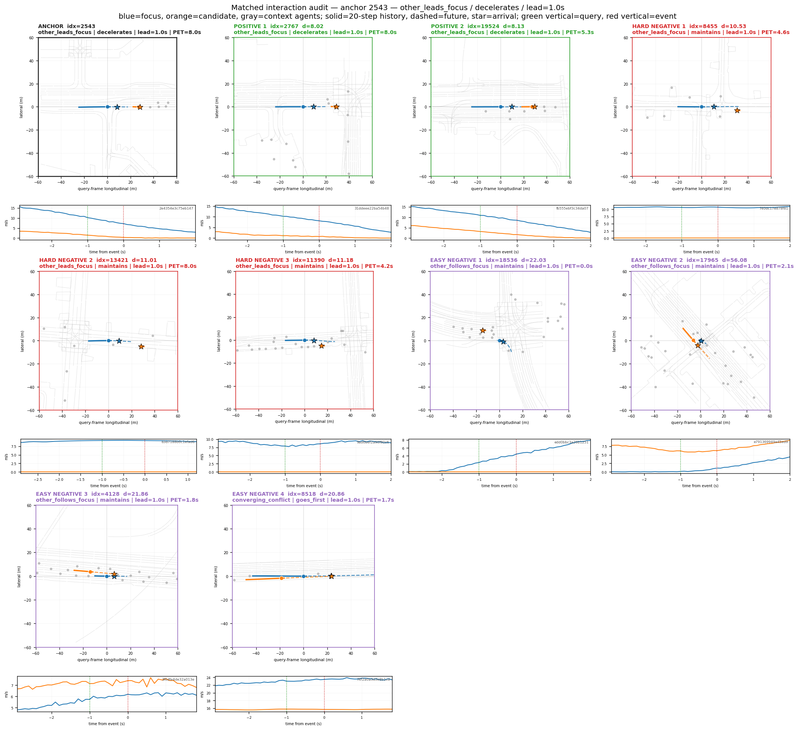
| role | idx | distance | relation | response | lead | PET | Δarrival | source |
|---|---|---|---|---|---|---|---|---|
| anchor | 2543 | — | other_leads_focus | decelerates | 1.0s | 8.0 | 0.0 | 2e4354e3c75eb147_focus_1481_src5.npz |
| positive 1 | 2767 | 8.02 | other_leads_focus | decelerates | 1.0s | 8.0 | 0.0 | 31ddeee22ba54b48_focus_854_src2.npz |
| positive 2 | 19524 | 8.13 | other_leads_focus | decelerates | 1.0s | 5.3 | 0.0 | fb555ebf3c34da07_focus_269_src3.npz |
| hard_negative 1 | 8455 | 10.53 | other_leads_focus | maintains | 1.0s | 4.6 | 0.0 | 740dc17e878f81_focus_2679_src1.npz |
| hard_negative 2 | 13421 | 11.01 | other_leads_focus | maintains | 1.0s | 8.0 | 0.0 | b3d7188b6c1efad6_focus_1398_src4.npz |
| hard_negative 3 | 11390 | 11.18 | other_leads_focus | maintains | 1.0s | 4.2 | 0.0 | 9ad6bef2a90f80c6_focus_1369_src1.npz |
| easy_negative 1 | 18536 | 22.03 | other_follows_focus | maintains | 1.0s | 0.0 | 0.0 | edd0bbc3a26b1251_focus_18_src1.npz |
| easy_negative 2 | 17965 | 56.08 | other_follows_focus | maintains | 1.0s | 2.1 | 0.0 | e791369949a45ed9_focus_879_src0.npz |
| easy_negative 3 | 4128 | 21.86 | other_follows_focus | maintains | 1.0s | 1.8 | -1.8 | 3f6dfe4de32a013e_focus_1406_src0.npz |
| easy_negative 4 | 8518 | 20.86 | converging_conflict | goes_first | 1.0s | 1.7 | -1.7 | 74f2a0a3d3e8b1cd_focus_328_src0.npz |
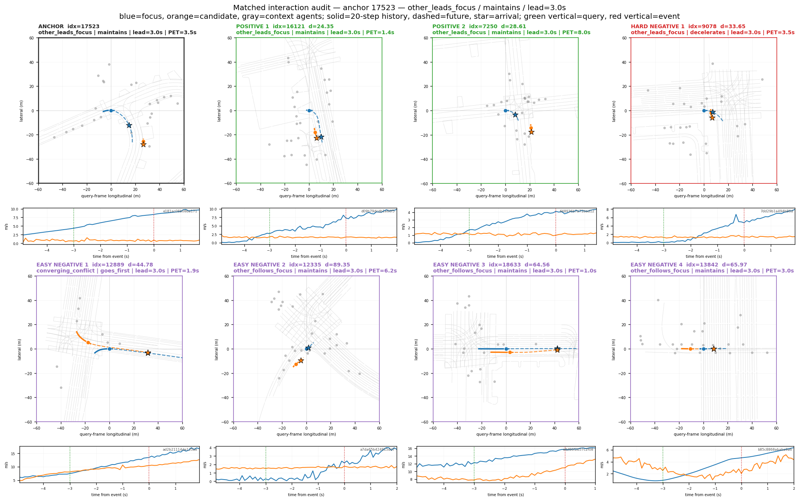
| role | idx | distance | relation | response | lead | PET | Δarrival | source |
|---|---|---|---|---|---|---|---|---|
| anchor | 17523 | — | other_leads_focus | maintains | 3.0s | 3.5 | 0.0 | e181ac08b08ba171_focus_1912_src2.npz |
| positive 1 | 16121 | 24.35 | other_leads_focus | maintains | 3.0s | 1.4 | 1.4 | d09b79dcdb1e66f5_focus_1355_src0.npz |
| positive 2 | 7250 | 28.61 | other_leads_focus | maintains | 3.0s | 8.0 | 0.0 | 648936b7a71bad12_focus_4467_src1.npz |
| hard_negative 1 | 9078 | 33.65 | other_leads_focus | decelerates | 3.0s | 3.5 | 0.0 | 7dd29b1a494b86d_focus_874_src2.npz |
| easy_negative 1 | 12889 | 44.78 | converging_conflict | goes_first | 3.0s | 1.9 | -1.9 | ad2b21114de135ae_focus_931_src2.npz |
| easy_negative 2 | 12335 | 89.35 | other_follows_focus | maintains | 3.0s | 6.2 | 0.0 | a7da65b424815dd7_focus_87_src7.npz |
| easy_negative 3 | 18633 | 64.56 | other_follows_focus | maintains | 3.0s | 1.0 | -1.0 | efbf86f2b57c2f08_focus_4_src1.npz |
| easy_negative 4 | 13842 | 65.97 | other_follows_focus | maintains | 3.0s | 3.0 | -3.0 | b85c8868ababa9a6_focus_2426_src2.npz |
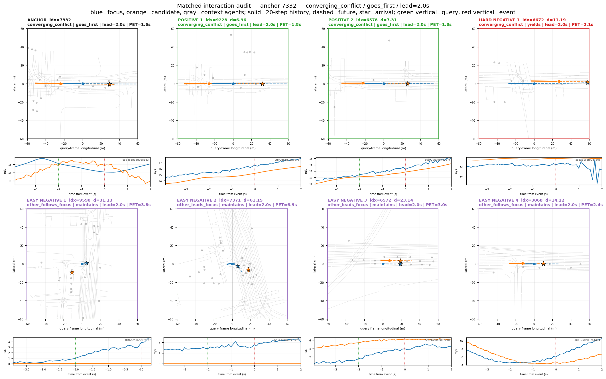
| role | idx | distance | relation | response | lead | PET | Δarrival | source |
|---|---|---|---|---|---|---|---|---|
| anchor | 7332 | — | converging_conflict | goes_first | 2.0s | 1.6 | -1.6 | 65d483b35d0e81d3_focus_2079_src7.npz |
| positive 1 | 9228 | 6.96 | converging_conflict | goes_first | 2.0s | 1.8 | -1.8 | 7fbf9d81d78ab97b_focus_339_src1.npz |
| positive 2 | 6578 | 7.31 | converging_conflict | goes_first | 2.0s | 1.8 | -1.8 | 5cc909e7994e3d7f_focus_1049_src1.npz |
| hard_negative 1 | 6672 | 11.19 | converging_conflict | yields | 2.0s | 2.1 | 2.1 | 5d8a51c8fb0d739c_focus_167_src0.npz |
| easy_negative 1 | 9590 | 31.13 | other_follows_focus | maintains | 2.0s | 3.8 | 0.0 | 85f66c53aae1f676_focus_15_src2.npz |
| easy_negative 2 | 7371 | 61.15 | other_leads_focus | maintains | 2.0s | 6.9 | 0.0 | 661bac1b49932eef_focus_517_src1.npz |
| easy_negative 3 | 6572 | 23.14 | other_leads_focus | maintains | 2.0s | 3.0 | 3.0 | 5cbeb7fba6816c18_focus_2_src0.npz |
| easy_negative 4 | 3068 | 14.22 | other_follows_focus | maintains | 2.0s | 2.4 | -2.4 | 3481258cd37a1de4_focus_271_src2.npz |
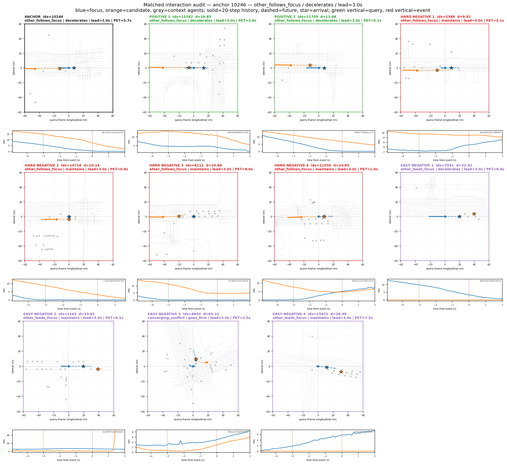
| role | idx | distance | relation | response | lead | PET | Δarrival | source |
|---|---|---|---|---|---|---|---|---|
| anchor | 10246 | — | other_follows_focus | decelerates | 3.0s | 5.7 | 0.0 | 8e22d7c9ce91e352_focus_471_src1.npz |
| positive 1 | 15342 | 10.85 | other_follows_focus | decelerates | 3.0s | 3.6 | 0.0 | c846638e880c6782_focus_384_src2.npz |
| positive 2 | 11709 | 11.06 | other_follows_focus | decelerates | 3.0s | 5.1 | 0.0 | 9f56f77fafbec176_focus_234_src1.npz |
| hard_negative 1 | 5388 | 9.92 | other_follows_focus | maintains | 3.0s | 3.1 | 0.0 | 4eb40d39523f8894_focus_1103_src3.npz |
| hard_negative 2 | 14716 | 10.14 | other_follows_focus | maintains | 3.0s | 0.6 | 0.6 | c130248a62f00782_focus_432_src0.npz |
| hard_negative 3 | 6111 | 10.66 | other_follows_focus | maintains | 3.0s | 8.0 | 0.0 | 57c8d92ce01faa36_focus_570_src2.npz |
| hard_negative 4 | 11550 | 10.85 | other_follows_focus | maintains | 3.0s | 2.6 | -2.6 | 9d7a21c03282c97a_focus_139_src1.npz |
| easy_negative 1 | 7591 | 32.42 | other_leads_focus | decelerates | 3.0s | 8.0 | 0.0 | 6820ab7efa87e67a_focus_128_src3.npz |
| easy_negative 2 | 1165 | 33.81 | other_leads_focus | maintains | 3.0s | 6.1 | 0.0 | 1cb87f53a506da65_focus_4920_src4.npz |
| easy_negative 3 | 8602 | 65.31 | converging_conflict | goes_first | 3.0s | 2.5 | -2.5 | 76ebc4d1b0f95453_focus_1032_src2.npz |
| easy_negative 4 | 15972 | 26.98 | other_leads_focus | maintains | 3.0s | 7.5 | 0.0 | cefc929310b66cf1_focus_17_src3.npz |
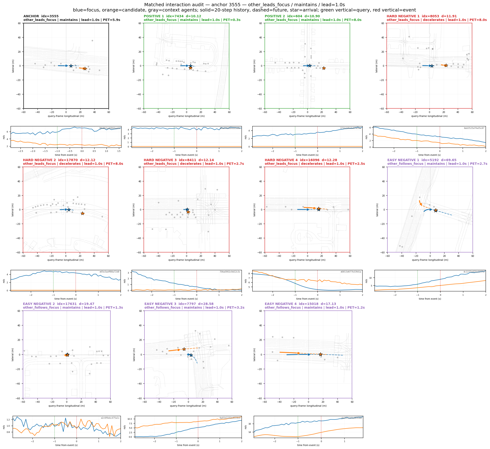
| role | idx | distance | relation | response | lead | PET | Δarrival | source |
|---|---|---|---|---|---|---|---|---|
| anchor | 3555 | — | other_leads_focus | maintains | 1.0s | 5.9 | 0.0 | 39b862ad0860ae62_focus_1558_src2.npz |
| positive 1 | 7434 | 10.12 | other_leads_focus | maintains | 1.0s | 0.3 | 0.3 | 66af3420e4d35d8e_focus_24_src0.npz |
| positive 2 | 604 | 10.90 | other_leads_focus | maintains | 1.0s | 8.0 | 0.0 | 171b4d9a5a87e593_focus_1272_src1.npz |
| hard_negative 1 | 8053 | 11.91 | other_leads_focus | decelerates | 1.0s | 8.0 | 0.0 | 6dd3525d7fe05c87_focus_20_src1.npz |
| hard_negative 2 | 17870 | 12.12 | other_leads_focus | decelerates | 1.0s | 8.0 | 0.0 | e65e3aeff88a72d8_focus_3054_src5.npz |
| hard_negative 3 | 8411 | 12.14 | other_leads_focus | decelerates | 1.0s | 2.7 | 2.7 | 736a0902c9d12c3c_focus_1294_src2.npz |
| hard_negative 4 | 16096 | 12.28 | other_leads_focus | decelerates | 1.0s | 2.5 | 2.5 | d0813d677b33fd1a_focus_2980_src2.npz |
| easy_negative 1 | 5192 | 69.65 | other_follows_focus | maintains | 1.0s | 2.7 | -2.7 | 4c1277a420a3157d_focus_1663_src1.npz |
| easy_negative 2 | 17631 | 19.47 | other_follows_focus | maintains | 1.0s | 1.3 | -1.3 | e2c6f9ebc475a1c_focus_1868_src2.npz |
| easy_negative 3 | 7797 | 28.58 | other_follows_focus | maintains | 1.0s | 3.2 | 0.0 | 6a91b1153c4115c3_focus_11_src2.npz |
| easy_negative 4 | 15018 | 17.13 | other_follows_focus | maintains | 1.0s | 1.2 | -1.2 | c4e3211d4a4830a8_focus_1494_src0.npz |
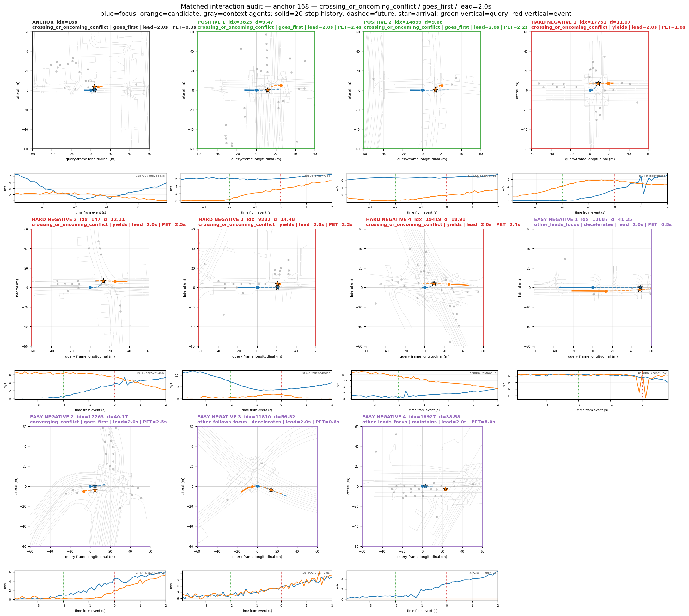
| role | idx | distance | relation | response | lead | PET | Δarrival | source |
|---|---|---|---|---|---|---|---|---|
| anchor | 168 | — | crossing_or_oncoming_conflict | goes_first | 2.0s | 0.3 | -0.3 | 11d788738b2bed56_focus_1446_src3.npz |
| positive 1 | 3825 | 9.47 | crossing_or_oncoming_conflict | goes_first | 2.0s | 2.4 | -2.4 | 3c8b8c4c7574f1dd_focus_356_src4.npz |
| positive 2 | 14899 | 9.68 | crossing_or_oncoming_conflict | goes_first | 2.0s | 2.2 | -2.2 | c37932165597b45b_focus_32_src2.npz |
| hard_negative 1 | 17751 | 11.07 | crossing_or_oncoming_conflict | yields | 2.0s | 1.8 | 1.8 | e494ef45bafcbea6_focus_1253_src0.npz |
| hard_negative 2 | 147 | 12.11 | crossing_or_oncoming_conflict | yields | 2.0s | 2.5 | 2.5 | 1151e26ae52d9406_focus_761_src1.npz |
| hard_negative 3 | 9282 | 14.48 | crossing_or_oncoming_conflict | yields | 2.0s | 2.3 | 2.3 | 8030d268ebe46dec_focus_1501_src2.npz |
| hard_negative 4 | 19419 | 18.91 | crossing_or_oncoming_conflict | yields | 2.0s | 2.4 | 2.4 | f9f8887865f64d36_focus_1608_src1.npz |
| easy_negative 1 | 13687 | 41.35 | other_leads_focus | decelerates | 2.0s | 0.8 | 0.8 | b678ba34cd6c9752_focus_2236_src3.npz |
| easy_negative 2 | 17763 | 40.17 | converging_conflict | goes_first | 2.0s | 2.5 | -2.5 | e4d261d0e41e3ccd_focus_1773_src1.npz |
| easy_negative 3 | 11810 | 56.52 | other_follows_focus | decelerates | 2.0s | 0.6 | -0.6 | a0c9552a3e4c20f6_focus_1279_src0.npz |
| easy_negative 4 | 18927 | 38.58 | other_leads_focus | maintains | 2.0s | 8.0 | 0.0 | f405495fb6902be1_focus_3623_src1.npz |
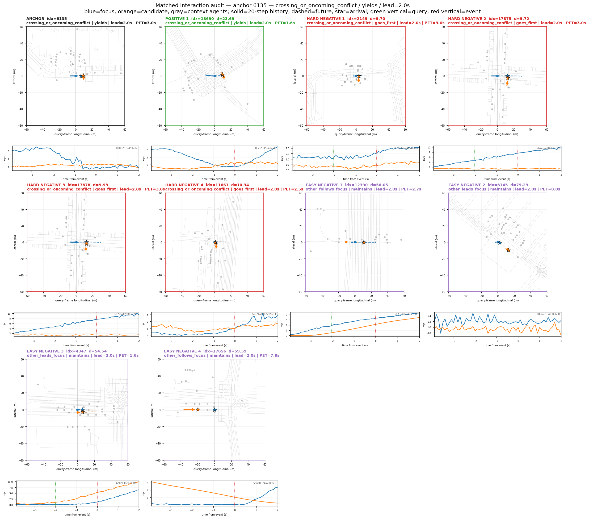
| role | idx | distance | relation | response | lead | PET | Δarrival | source |
|---|---|---|---|---|---|---|---|---|
| anchor | 6135 | — | crossing_or_oncoming_conflict | yields | 2.0s | 3.0 | 3.0 | 58205251e459e0c_focus_0_src0.npz |
| positive 1 | 18690 | 23.69 | crossing_or_oncoming_conflict | yields | 2.0s | 1.6 | 1.6 | f0ccf2d05e43aafc_focus_1697_src1.npz |
| hard_negative 1 | 2149 | 9.70 | crossing_or_oncoming_conflict | goes_first | 2.0s | 3.0 | -3.0 | 2910666a2084ed0a_focus_2237_src1.npz |
| hard_negative 2 | 17875 | 9.72 | crossing_or_oncoming_conflict | goes_first | 2.0s | 3.0 | -3.0 | e67efa4280f3c399_focus_2811_src1.npz |
| hard_negative 3 | 17878 | 9.93 | crossing_or_oncoming_conflict | goes_first | 2.0s | 3.0 | -3.0 | e67efa4280f3c399_focus_2811_src1.npz |
| hard_negative 4 | 11661 | 10.34 | crossing_or_oncoming_conflict | goes_first | 2.0s | 2.5 | -2.5 | 9eb74a1882285a11_focus_709_src3.npz |
| easy_negative 1 | 12390 | 56.05 | other_follows_focus | maintains | 2.0s | 2.7 | -2.7 | a873e88a6f3a3b8c_focus_365_src0.npz |
| easy_negative 2 | 8145 | 79.29 | other_leads_focus | maintains | 2.0s | 8.0 | 0.0 | 6f09ab154f60c638_focus_3285_src4.npz |
| easy_negative 3 | 4347 | 54.54 | other_leads_focus | maintains | 2.0s | 1.6 | 1.6 | 421213ae1e68ff3_focus_1637_src0.npz |
| easy_negative 4 | 17656 | 59.59 | other_follows_focus | maintains | 2.0s | 7.8 | 0.0 | e2fac8874a2006e2_focus_61_src2.npz |
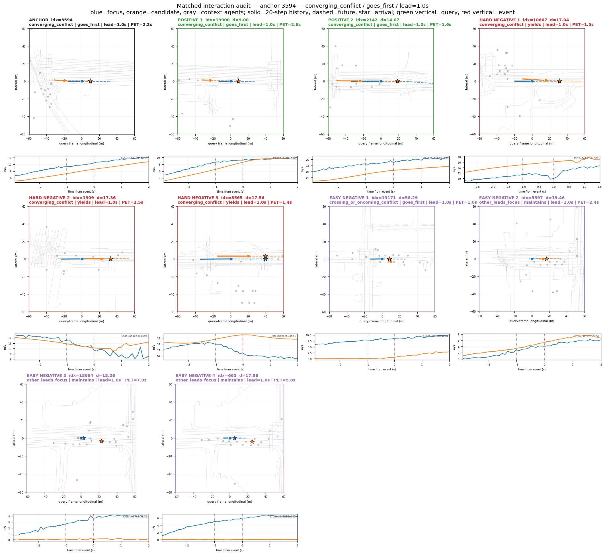
| role | idx | distance | relation | response | lead | PET | Δarrival | source |
|---|---|---|---|---|---|---|---|---|
| anchor | 3594 | — | converging_conflict | goes_first | 1.0s | 2.2 | -2.2 | 3a0a140d4ed59d60_focus_1342_src2.npz |
| positive 1 | 19900 | 9.00 | converging_conflict | goes_first | 1.0s | 2.6 | -2.6 | ff7955a8fdf9c247_focus_2779_src0.npz |
| positive 2 | 2142 | 14.07 | converging_conflict | goes_first | 1.0s | 1.6 | -1.6 | 28e2f6c71259a23f_focus_1608_src0.npz |
| hard_negative 1 | 10667 | 17.04 | converging_conflict | yields | 1.0s | 1.5 | 1.5 | 9342c4e1d7acc3f4_focus_1575_src1.npz |
| hard_negative 2 | 1309 | 17.36 | converging_conflict | yields | 1.0s | 2.5 | 2.5 | 1dd53a51e63e15c6_focus_969_src1.npz |
| hard_negative 3 | 8565 | 17.56 | converging_conflict | yields | 1.0s | 1.4 | 1.4 | 75f476dcce534551_focus_587_src0.npz |
| easy_negative 1 | 13171 | 58.29 | crossing_or_oncoming_conflict | goes_first | 1.0s | 1.6 | -1.6 | b117a0659afe4cad_focus_2618_src2.npz |
| easy_negative 2 | 5597 | 19.46 | other_leads_focus | maintains | 1.0s | 2.4 | 2.4 | 5236a88122c57351_focus_1208_src2.npz |
| easy_negative 3 | 18664 | 18.26 | other_leads_focus | maintains | 1.0s | 7.9 | 0.0 | f06fad08719f5843_focus_2038_src0.npz |
| easy_negative 4 | 663 | 17.96 | other_leads_focus | maintains | 1.0s | 5.8 | 0.0 | 17bdbd8d3278a223_focus_432_src0.npz |
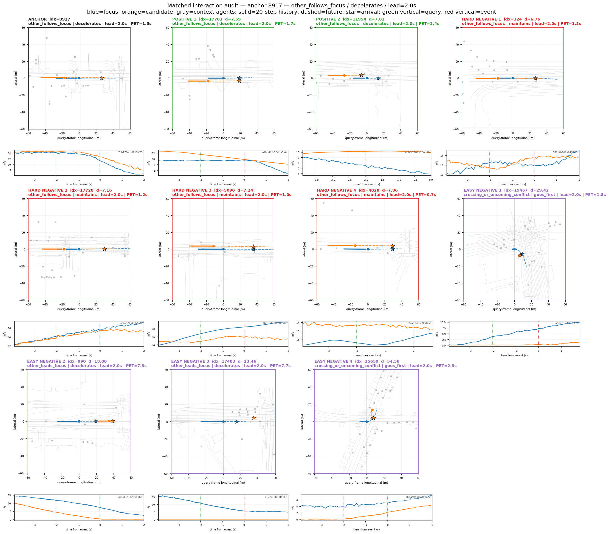
| role | idx | distance | relation | response | lead | PET | Δarrival | source |
|---|---|---|---|---|---|---|---|---|
| anchor | 8917 | — | other_follows_focus | decelerates | 2.0s | 1.5 | -1.5 | 7bb17facb48d5a75_focus_1091_src1.npz |
| positive 1 | 17703 | 7.59 | other_follows_focus | decelerates | 2.0s | 1.7 | -1.7 | e39bd6fb304da5a6_focus_1253_src0.npz |
| positive 2 | 11954 | 7.81 | other_follows_focus | decelerates | 2.0s | 3.4 | 0.0 | a24cd1303d70eddb_focus_86_src3.npz |
| hard_negative 1 | 324 | 6.76 | other_follows_focus | maintains | 2.0s | 1.3 | -1.3 | 142dfb842a873033_focus_182_src1.npz |
| hard_negative 2 | 17728 | 7.16 | other_follows_focus | maintains | 2.0s | 1.2 | -1.2 | e3fafd9cdfdfdd72_focus_1209_src0.npz |
| hard_negative 3 | 5090 | 7.24 | other_follows_focus | maintains | 2.0s | 1.0 | -1.0 | 4b61c03f986f4044_focus_4442_src5.npz |
| hard_negative 4 | 4028 | 7.86 | other_follows_focus | maintains | 2.0s | 0.7 | -0.7 | 3ea3fb4ca7fcd2a1_focus_114_src4.npz |
| easy_negative 1 | 19467 | 29.42 | crossing_or_oncoming_conflict | goes_first | 2.0s | 1.8 | -1.8 | fa56261e4f5e9714_focus_150_src2.npz |
| easy_negative 2 | 890 | 18.00 | other_leads_focus | decelerates | 2.0s | 7.3 | 0.0 | 1a08d921b266e5b5_focus_730_src1.npz |
| easy_negative 3 | 17483 | 23.46 | other_leads_focus | decelerates | 2.0s | 7.7 | 0.0 | e12f612fefbfaf83_focus_1750_src3.npz |
| easy_negative 4 | 15659 | 54.58 | crossing_or_oncoming_conflict | goes_first | 2.0s | 2.3 | -2.3 | cbbcd959d2dbc4e2_focus_1618_src3.npz |
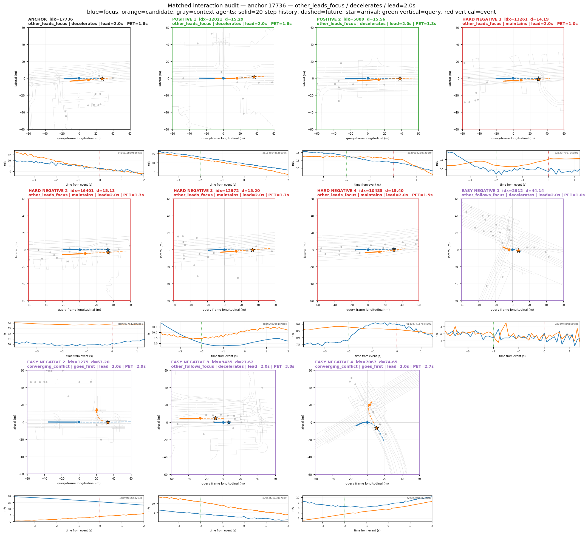
| role | idx | distance | relation | response | lead | PET | Δarrival | source |
|---|---|---|---|---|---|---|---|---|
| anchor | 17736 | — | other_leads_focus | decelerates | 2.0s | 1.8 | 1.8 | e45cc1cbd98e64ab_focus_704_src1.npz |
| positive 1 | 12021 | 15.29 | other_leads_focus | decelerates | 2.0s | 1.8 | 1.8 | a3134cc48c28c0dc_focus_611_src2.npz |
| positive 2 | 5889 | 15.56 | other_leads_focus | decelerates | 2.0s | 1.3 | 1.3 | 5529caa26e735ef6_focus_467_src3.npz |
| hard_negative 1 | 13261 | 14.19 | other_leads_focus | maintains | 2.0s | 1.0 | 1.0 | b2331f70e72cdbf1_focus_2597_src3.npz |
| hard_negative 2 | 16401 | 15.13 | other_leads_focus | maintains | 2.0s | 1.3 | 1.3 | d497637c42593b58_focus_1368_src1.npz |
| hard_negative 3 | 12972 | 15.20 | other_leads_focus | maintains | 2.0s | 1.7 | 1.7 | ade62fe9661c7dec_focus_2958_src6.npz |
| hard_negative 4 | 10485 | 15.40 | other_leads_focus | maintains | 2.0s | 1.5 | 1.5 | 9149a771e7b44391_focus_8_src2.npz |
| easy_negative 1 | 2912 | 44.14 | other_follows_focus | decelerates | 2.0s | 1.0 | -1.0 | 333cff4c66d997da_focus_364_src7.npz |
| easy_negative 2 | 1275 | 67.20 | converging_conflict | goes_first | 2.0s | 2.9 | -2.9 | 1d8ffbfe86682334_focus_1008_src2.npz |
| easy_negative 3 | 9435 | 21.62 | other_follows_focus | decelerates | 2.0s | 3.8 | 0.0 | 829e5f7848087c89_focus_10_src1.npz |
| easy_negative 4 | 7067 | 74.65 | converging_conflict | goes_first | 2.0s | 2.7 | -2.7 | 626eece0f9828dcb_focus_502_src1.npz |
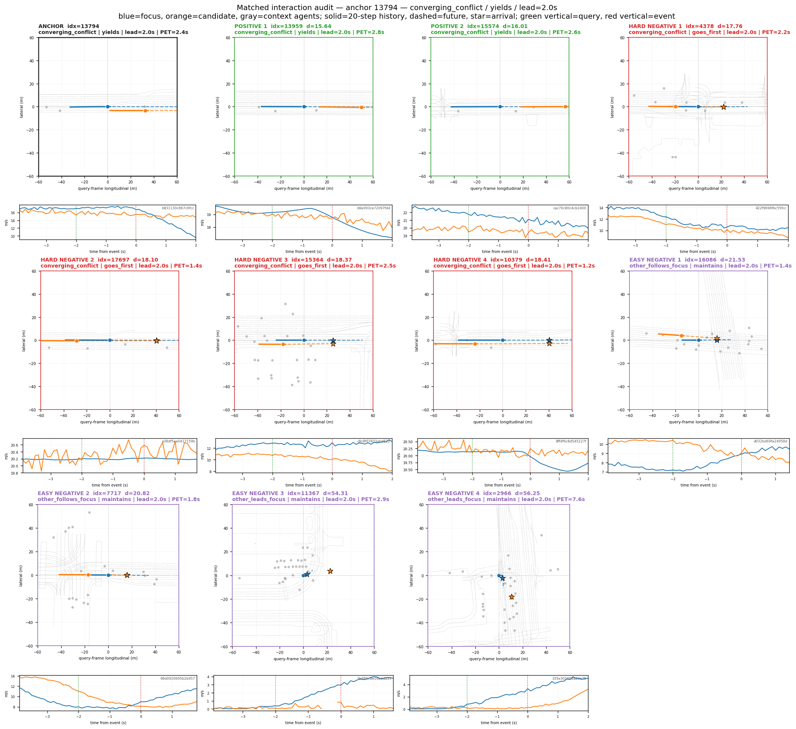
| role | idx | distance | relation | response | lead | PET | Δarrival | source |
|---|---|---|---|---|---|---|---|---|
| anchor | 13794 | — | converging_conflict | yields | 2.0s | 2.4 | 2.4 | b831130c867c6fcc_focus_866_src0.npz |
| positive 1 | 13959 | 15.64 | converging_conflict | yields | 2.0s | 2.8 | 2.8 | b9e093ce72097fd4_focus_3241_src2.npz |
| positive 2 | 15574 | 16.01 | converging_conflict | yields | 2.0s | 2.6 | 2.6 | cac70c80c4cb2400_focus_687_src1.npz |
| hard_negative 1 | 4378 | 17.76 | converging_conflict | goes_first | 2.0s | 2.2 | -2.2 | 422f9696fbc55fcc_focus_1_src1.npz |
| hard_negative 2 | 17697 | 18.10 | converging_conflict | goes_first | 2.0s | 1.4 | -1.4 | e38df5ea0417159b_focus_952_src5.npz |
| hard_negative 3 | 15364 | 18.37 | converging_conflict | goes_first | 2.0s | 2.5 | -2.5 | c8c8f07833abd822_focus_1110_src1.npz |
| hard_negative 4 | 10379 | 18.41 | converging_conflict | goes_first | 2.0s | 1.2 | -1.2 | 8ff4f6c8d545227f_focus_372_src3.npz |
| easy_negative 1 | 16086 | 21.53 | other_follows_focus | maintains | 2.0s | 1.4 | -1.4 | d032bd69fa24958d_focus_1154_src1.npz |
| easy_negative 2 | 7717 | 20.82 | other_follows_focus | maintains | 2.0s | 1.8 | -1.8 | 69d0920695b2b957_focus_452_src0.npz |
| easy_negative 3 | 11367 | 54.31 | other_leads_focus | maintains | 2.0s | 2.9 | 0.0 | 9a681c8e16eada35_focus_580_src1.npz |
| easy_negative 4 | 2966 | 56.25 | other_leads_focus | maintains | 2.0s | 7.6 | 0.0 | 335e301008a2ae75_focus_856_src1.npz |
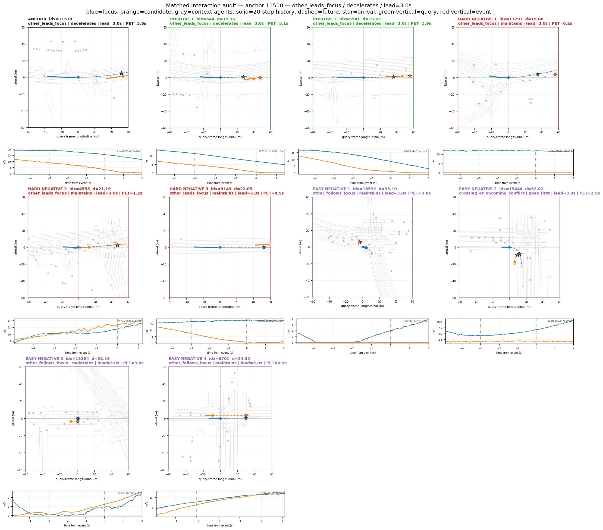
| role | idx | distance | relation | response | lead | PET | Δarrival | source |
|---|---|---|---|---|---|---|---|---|
| anchor | 11510 | — | other_leads_focus | decelerates | 3.0s | 3.6 | 0.0 | 9caa0585abf3e90e_focus_0_src0.npz |
| positive 1 | 644 | 15.35 | other_leads_focus | decelerates | 3.0s | 5.1 | 0.0 | 177784c3c929b15e_focus_3217_src3.npz |
| positive 2 | 5941 | 19.63 | other_leads_focus | decelerates | 3.0s | 3.9 | 0.0 | 55b23cdef2cabbd1_focus_1385_src0.npz |
| hard_negative 1 | 17297 | 19.80 | other_leads_focus | maintains | 3.0s | 6.2 | 0.0 | de2be4f874dd5a76_focus_523_src1.npz |
| hard_negative 2 | 4555 | 21.19 | other_leads_focus | maintains | 3.0s | 1.2 | 1.2 | 447124eda2151fdf_focus_2265_src1.npz |
| hard_negative 3 | 9149 | 22.05 | other_leads_focus | maintains | 3.0s | 4.5 | 0.0 | 7ebddbcdeb1750da_focus_488_src1.npz |
| easy_negative 1 | 18532 | 33.10 | other_follows_focus | maintains | 3.0s | 3.8 | 0.0 | edd0bbc3a26b1251_focus_18_src1.npz |
| easy_negative 2 | 15444 | 52.02 | crossing_or_oncoming_conflict | goes_first | 3.0s | 2.9 | -2.9 | c95fb8e2247609bb_focus_1322_src0.npz |
| easy_negative 3 | 13384 | 33.19 | other_follows_focus | maintains | 3.0s | 3.0 | -3.0 | b3c98c38b391abf3_focus_781_src0.npz |
| easy_negative 4 | 6701 | 34.32 | other_follows_focus | maintains | 3.0s | 0.9 | -0.9 | 5df89bfbbd49926c_focus_407_src0.npz |